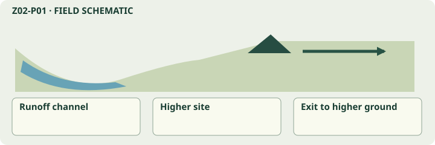

Z02-P01 · Shelter and housing
Reject unsafe shelter sites
Rule out unsafe sites before judging comfort or convenience.
When it applies · Choosing temporary cover or a permitted campsite on land. Site rules and local hazards vary.
Equipment · Map and weather information if available. Use daylight for inspection where possible.

Actions
- Check land rules and choose an established or designated site when required. Inspect the site and access route before unpacking.[E03]
- Leave stream channels, low ground that can flood and other routes concentrating runoff. Upstream rain can reach a site even when the local sky is clear.[E04]
- Scan overhead and upslope. Leave any spot where loose limbs, loose material or an unstable slope threaten the group.[E03, ED]
Verify · Identify an exit to safer ground and a place for the party away from overhead hazards and drainage paths.[E04, ED]
Stop or change course · Reject a site if you cannot confirm a clear exit or if runoff, wind or falling material threatens it.[E04, ED]
Evidence and editorial notes
- E03 · NPS · Finding and Setting Up a Campsite
- Finding a campsite · Legal established or designated campsite
Choose a durable legal site suited to the conditions. Campsite rules and physical risks vary by park.
Primary source · checked 2026-11-24 - E04 · NWS · Flood Safety: Key Points for Camping and Hiking
- Before and during camping; know your surroundings · Stream valleys and runoff channels subject to flash flooding
Choose higher ground away from water channels. Rain far upstream can drive rapid flooding.
Primary source · checked 2026-11-24
Source lineage · B012-P09.